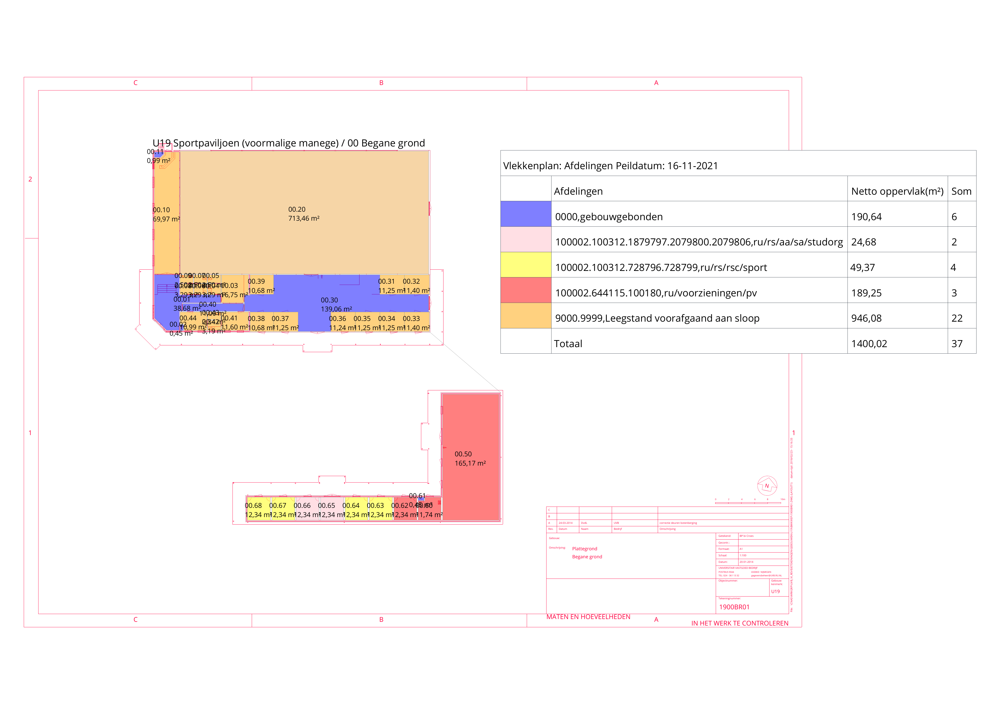
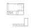

Originele bron hieronder; bewerkte onderlegger daaronder. Alleen kamers 00.31–00.39 vervallen volgens bevestiging gebruiker. Het bronlabel 00.30 / 139,06 m² is geen bevestigde oppervlakte van het samengevoegde gebied.

